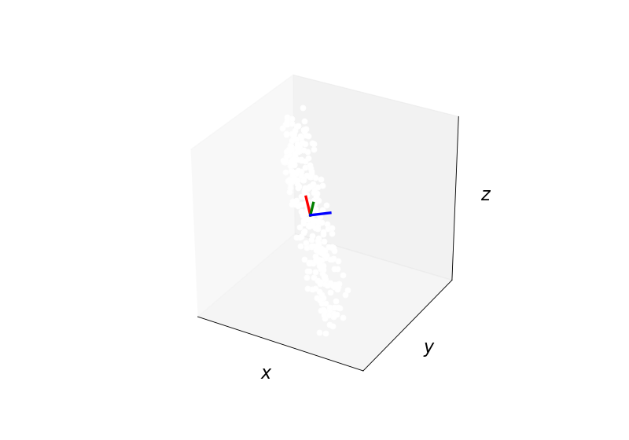

pca_numpy
-
compas.numerical.pca_numpy(data)[source] Compute the principle components of a set of data points.
- Parameters
data (list) – A list of m observations, measuring n variables. For example, if the data are points in 2D space, the data parameter should contain m nested lists of 2 variables, the x and y coordinates.
- Returns
list – A list of principle directions. The number of principle directions is equal to the dimensionality of the problem(?!). For example, if the data points are locations in 3D space, three principle components will be returned. If the data points are locations in 2D space, only two principle components will be returned.
Notes
PCA of a dataset finds the directions along which the variance of the data is largest, i.e. the directions along which the data is most spread out.
Examples
from numpy import random import matplotlib.pyplot as plt from compas.geometry import rotation_matrix from compas.geometry import transform_numpy from compas.plotters import Axes3D from compas.plotters import Cloud3D from compas.plotters import Bounds from compas.plotters import create_axes_3d from compas.numerical import pca_numpy data = random.rand(300, 3) data[:, 0] *= 10.0 data[:, 1] *= 1.0 data[:, 2] *= 4.0 a = 3.14159 * 30.0 / 180 Ry = rotation_matrix(a, [0, 1.0, 0.0], rtype='array') a = -3.14159 * 45.0 / 180 Rz = rotation_matrix(a, [0, 0, 1.0], rtype='array') R = Rz.dot(Ry) data = transform_numpy(data, R) average, vectors, values = pca_numpy(data) axes = create_axes_3d() Bounds(data).plot(axes) Cloud3D(data).plot(axes) Axes3D(average, vectors).plot(axes) plt.show()